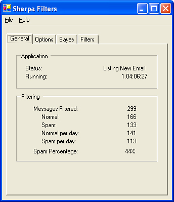

|
|
|
Screen Shots |
Here's a shot of what Sherpa looks like while it is running. Every so often, Sherpa will wake up and check for new mail and run it through the filters that you have written. When it finds a piece of spam, it increments the counters and calculates the percentage of spam that you receive. It also keeps averages of spam/day and normal/day.  |